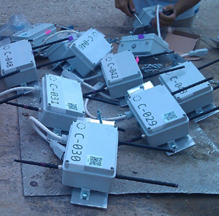
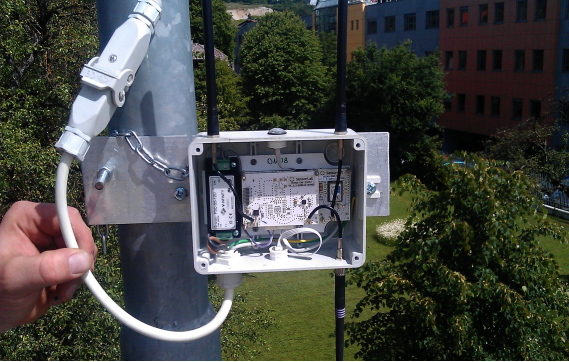
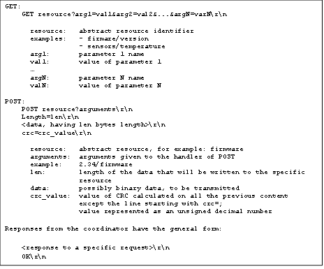

LOG-a-TEC

About
The Cognitive radio experimentation part of the LOG-a-TEC testbed is located in the municipality of Logatec, Slovenia. LOG-a-TEC is an outdoor experimental facility supporting cognitive radio networking experimentation in ISM and TV bands. It is equipped with 50 VESNA platforms and VSE-ISMTV boards grouped in two clusters: one in city center and one in the industrial zone as displayed in the image below. The nodes support experimentation in ISM 868 MHz (blue), ISM 2.4 GHz (red) and TV 42 - 870 MHz (green). A small mirror, consisting of 10 nodes, is also available at JSI campus - this is typically used for testing before upgrading LOG-a-TEC.
|  |  |
The VESNA platform is a modular and fully flexible platform developed at the SensorLab @ Jozef Stefan Institute and is based on a high-performance microcontroller with ARM Cortex-M3. The VSE-ISMTV extension permits experimentation in ISM 868 MHz, ISM 2.4 GHz and TV 42 - 870 MHz. Each node is also equipped with a 2GB microSD card for storing predefined measurement configurations as well as measurement results. Each node is directly accessibile via web server with custom java application.

The testbed can be operated remotely through the LOG-a-TEC web portal. The user can select a cluster of VESNAs and configure them to perform sensing and/or transmission. As a result, the testbed is able to support sensing only experiments, transmission only experiments (excluding TV bands) and also transmission based on sensing results. The LOG-a-TEC web portal uses the GRASS-RaPlaT tool in order to (i) to provide the virtual experiment planning via simulation in order to ascertain the best setup before the actual execution in the testbed as well as (ii) to support the postprocessing and visualization of experimentation results.

Hardware components
The Log-a-tec testbed consists of several hardware components as described in the following sections.
VESNA SNE-ISMTV spectrum sensor
For the purpose of spectrum sensing in ISM and TV bands VESNA platform has been complemented by a SNE-ISMTV sensor node extension (SNE) board. SNE-ISMTV adds general-purpose radio-frequency transceiver hardware to the VESNA wireless sensor node. This hardware is separate from the SNR (sensor node radio) transceiver used to connect VESNA nodes into a wireless sensor network. SNE-ISMTV can thus be used for cognitive radio experimentation without disrupting the back-channel network as long as any experimental transmissions are not overlapping with the frequency bands used by the SNR. SNE-ISMTV applications include for example spectrum sensing, continuous and packet-based signal transmission and reception with RSSI and link quality measurements, and IEEE 802.15.4 compatible networking experiments. Several models of the extension board are available covering different parts of the spectrum. Their capabilities differ slightly and are described in detail in the following subsections.
SNE-ISMTV radio hardware is based on commercial, low-cost, low-power, highly integrated transceivers that communicate with the core board using digital SPI or I2C buses. In all but one case (SNE-ISMTV-UHF low-range detection) all radio-frequency and base-band processing is done in the transceiver, freeing the VESNA SNC (sensor node core) microcontroller from signal processing tasks. In most cases, communication with the radio is abstracted in the form of various hardware registers with read and/or write access via digital buses. These registers can be used to reconfigure radio hardware (central frequency, channel filter bandwidth, modulation and demodulation settings, signal generation, etc.), send data for transmission or retrieve received data, retrieve measurement results and so on. While SNE-ISMTV does not include a true general-purpose software-defined radio architecture, the reconfigurability of the radio components still allows for a large range of use cases.
Manufacturers of the integrated circuits used in SNE-ISMTV do not support all of the possible transceiver hardware configurations that can be obtained through register access. In fact, due to implementation details radios may not perform to specification in certain combinations of settings. This means that each configuration usually requires testing and calibration in a controlled laboratory environment before it can be used for experiments in the field. To work around this shortcoming several tested and calibrated hardware profiles are provided for each SNE-ISMTV model that cover specific use cases and contain a fixed low-level radio configuration.
All models of the SNE-ISMTV carry two distinct transceivers:
- An IEEE 802.15.4 compatible transceiver operating on the European 868 MHz SRD (short range device) ISM frequency band based on Atmel AT86RF212 and
- another multipurpose radio operating in either UHF TV band, 868 MHz SRD/ISM band or 2.4 GHz ISM (industrial, scientific, medical) band, depending on the SNE-ISMTV model.
TV Spectrum sensing with SNE-ISMTV-UHF
SNE-ISMTV-UHF contains a VHF and UHF TV band receiver based on the NXP TDA18219HN silicon tuner and was designed for spectrum sensing experimentation in TV white spaces. The TDA18219HN silicon tuner integrates a low-noise amplifier, RF tracking filters, single down-conversion low intermediate-frequency image-rejection mixer, frequency synthesizer and selectable channel filters. It also includes multiple stages of analogue automatic gain control (AGC).
Individual receiver stages can be reconfigured through a state machine with an I2C bus interface. Digital control logic also controls built-in test tone generator and RF filter calibration.
For energy detection SNE-ISMTV-UHF offers two detectors with a logarithmic response. A high-range detector is built into TDA18219HN and has a range from -80 to 0 dBm with 1 dBm resolution. The measurement is controlled via a state machine internal to TDA18219HN which is armed and triggered through the digital I2C bus. The measurement process includes signal averaging.
For measuring signals below -80 dBm, a demodulating logarithmic amplifier Analog Devices AD8307 is connected between the TDA18219HN intermediate frequency output and the 1 Msample/s analogue-to-digital converter on the VESNA SNC (sensor node core) as depicted in the figure below. This puts sampling of the signal power level in control of the firmware, allowing various averaging and sampling methods. Additionally, gain in the intermediate frequency stage can be adjusted via a variable-gain amplifier controlled by a digital-to-analogue converter (DAC) in the SNC.

To lower the power consumption, both the logarithmic amplifier (via ENB pin) and the tuner (via I2C sleep-mode control registers) can be powered down.
Two hardware profiles are provided that differ in energy detector resolution bandwidth. A wide-band setting sets the channel filter to 8 MHz, allowing energy detection at the bandwidth of a complete DVB-T channel. A narrow-band setting sets the channel filter to 1.7 MHz and is suitable for detection of wireless microphones and secondary users in the TV white spaces.
While TDA18219HN and the SNE-ISMTV designs allow operation down to 42 MHz, there are currently no hardware profiles available for VHF frequency band.
Since it is based on a DVB-T tuner, this extension board is not capable of signal transmission in contrast to the extension boards SNE-ISMTV-TI868 and SNE-ISMTV-TI2400, as described in the following subsections.
The SNE-ISMTV-UHF spectrum sensing specifications are summarized in the table below.
| Parameter | Value | Units | Comment |
| Frequency range | 470 to 862 | MHz | |
| Frequency resolution | 1 | kHz | |
| Local oscillator settle time | 5000 | us | |
| Channel filter bandwidth | 1700 8000 | kHz | |
| Power detector range | -150 to 0 | dBm | |
| Power detector resolution | 1.000 0.032 | dB | above -80 dBm below -80 dBm |
| Power detector uncertainty | 1.76 | dBm | CW at -90 dBm, no averaging |
| Detector read-out time | 45000 1 | us | above -80 dBm below -80 dBm (see note 1) |
| Average noise level (1 Hz bandwidth) | -169 -165 | dBm | at 650 MHz at 800 MHz |
| Dynamic range | 60 | dB | With total input power over the entire frequency range below -30 dBm. |
868 MHz ISM Sensing and transmission with SNE-ISMTV-TI868
SNE-ISMTV-TI868 contains a sub-GHz transceiver based on the Texas Instruments CC1101. CC1101 contains a versatile radio-frequency tuner as well as a modem and packet handling hardware. It can be used for experiments in the European 868 MHz SRD band or in the higher channels of the UHF TV band. It can act as a narrow-band energy detection spectrum sensing receiver, interferer with continuous test signal transmission or for packet transmission and reception in networking experiments.
The analogue receive path on CC1101 consists of a low-noise amplifier, quadrature down-converter and a channel filter. Additional filtering, gain control and demodulation are performed in the digital domain, after the signal has been digitized by an analogue-to-digital converter (ADC) at an intermediate frequency. A fractional-N PLL frequency synthesizer is used as a local oscillator. For transmission, the same synthesizer is used to produce a modulated quadrature signal which is amplified by a power amplifier stage. Antenna matching is performed by an external LC balun network.
Digital radio control logic allows reconfiguration of the frequency synthesizer settings (base frequency, channel spacing) and baseband channel filter bandwidth.
Baseband modulator and demodulator are capable of 2-FSK, 4-FSK, GFSK, MSK and ASK/OOK modulations. Continuous transmission and reception using these modulations is possible with data streamed via the SPI bus from the sensor node core (SNC) module. Additionally, a pseudo-random sequence generated in the transceiver itself can be used when transmitting in continuous mode, which can be used in interferer simulations.
For packet-based transmissions, integrated packet handling hardware implements a proprietary packet encapsulation scheme. It includes preamble and synchronization word detection, data integrity check using CRC, address filter and optional data whitening.
For energy detection, an integrated logarithmic-response detector can be used. Three hardware profiles are provided for it, covering the 868 MHz SRD band with different resolution bandwidths.
The spectrum sensing specifications of the module are summarized in the first table below, while the signal transmission specifications are provided in the second table. For signal transmission experiments, a hardware profile is provided simulating a 200 kHz wide-band FM wireless microphone in the UHF band with adjustable transmission power. Additionally, a profile of a short-range device is also available with transmission in the SRD band using 100% duty cycle.
Additional sensing or transmission profiles can be constructed using the SmartRF studio software provided by Texas Instruments.
| Parameter | Value | Units | Comment |
|---|---|---|---|
| Frequency range | 863 to 871 | MHz | |
| Frequency resolution | 50 | kHz | |
| Channel filter bandwidth | 60 100 200 | kHz | |
| Power detector range | -123 to 4 | dBm | |
| Power detector resolution | 0.5 | dB | |
| Average noise level (1 Hz bandwidth) | -150 | dBm | at 868 MHz |
| Parameter | Value | Units | Comment |
|---|---|---|---|
| Frequency range | 780 to 862; 863 to 871 | MHz | |
| Frequency resolution | 200, 50 | kHz | |
| FM deviation | 200, 50 | kHz | |
| Transmission power range | -55 to 0 | dBm | |
| Transmission power resolution | 2 | dBm |
2.4 GHz ISM Sensing and transmission with SNE-ISMTV-TI24
SNE-ISMTV-TI24 contains a 2.4 GHz transceiver based on the Texas Instruments CC2500. CC2500 contains a versatile radio-frequency tuner as well as a modem and packet handling hardware. It can be used for experiments in the international 2.4 GHz industrial, scientific, medical (ISM) band. It can act as a narrow-band energy detection spectrum sensing receiver, interferer with continuous test signal transmission or for packet transmission and reception in networking experiments.
Performance and capabilities of SNE-ISMTV-TI24 are very similar to SNE-ISMTV-TI868 since, as shown in Figure 12, CC2500 integrated circuit is very similar to CC1101. Both extension boards share the same pin-out as well as SPI register map, the only difference being in the settings for the analogue domain. Therefore the description of the SNE-ISMTV-TI868 given in Section 3.1.2also applies to SNE-ISMTV-TI24.
The spectrum sensing and signal transmission specifications are provided in the first table and the second table below. For energy detection spectrum sensing, a hardware profile is provided covering the frequencies used by IEEE 802.11b wireless LAN.
For interferer simulation, a hardware profile is provided for a continuous transmission of a 200 kHz FM signal with adjustable transmission power.
Additional sensing or transmission profiles can be constructed using the SmartRF studio software provided by Texas Instruments.
| Parameter | Value | Units | Comment |
|---|---|---|---|
| Frequency range | 2400 to 2480 | MHz | |
| Frequency resolution | 400 | kHz | |
| Channel filter bandwidth | 400 | kHz | |
| Power detector range | -123 to 4 | dBm | |
| Power detector resolution | 0.5 | dB | |
| Average noise level (1 Hz bandwidth) | -159 | dBm | at 2400 MHz |
| Parameter | Value | Units | Comment |
|---|---|---|---|
| Frequency range | 2400 to 2459 | MHz | |
| Frequency resolution | 200 | kHz | |
| FM deviation | 200 | kHz | |
| Transmission power range | -55 to 0 | dBm | |
| Transmission power resolution | 2 | dBm |
Log-a-tec software components
The Log-a-tec testbed consists of several software components as described in the following sections.
LOG-a-TEC testbed access, control and reconfiguration
Establishing a connection from nodes to the server
This section focuses on user access to the VESNA-based testbed and the technologies behind it. The wireless sensor network among nodes is based on ZigBee, as implemented in the ZigBit port to Atmel modules. It is a multihop network, which means the gateway is able to communicate also with the nodes out of its direct wireless range.
For the purpose of communication between sensor network and the server located at JSI (infrastructure side) we developed a new protocol (see figure below), which was inspired by the HTTP protocol and is simple enough for fast implementation on VESNA nodes. The protocol defines two types of requests, GET and POST, which are understood by every VESNA node. The GET is used for “safe” requests which do not change the state of the system and POST for “unsafe” requests which change the state of the system. The response from a node following a GET request is considered to be in binary format and handled accordingly, although general responses are in text format and only the spectrum sensing data is in binary format. Every response ends with the sequence OK\r\n to indicate the end of the response.

The protocol includes simple and efficient error handling mechanism. There are two types of errors defined. The first is JUNK-INPUT, which is the more common situation when the resource name is mistyped and the parser on the node does not recognize it. After this response the parser on the node expects five new lines, which resets the parser. Only after that the resource can be accessed again. The second type of error is CORRUPTED-DATA, used when cyclic redundancy check (CRC) check did not succeed thus we can conclude that the error happened somewhere on the line between the infrastructure and the gateway. The last situation will occur with very low probability.
The protocol is designed as a client-server protocol. In our case the servers are sensor nodes and the client is the server on the infrastructure side. Before we can access the resources the gateway has to establish a connection with the infrastructure side. This is done by establishing a secure SSL encrypted socket with the server. The gateway has an Ethernet module embedded on the expansion board which is used to connect the gateway to the internet. The Ethernet module is configured to get the IP address from DHCP server and then automatically tries to set up an encrypted SSL socket with one of the SSL servers listening on a specific port located on the infrastructure side. Once the connection has been established one could access any resource (sensor, radio module, etc.) or procedure on any of the nodes. Procedures pre-prepared on the nodes include Remote reprogramming, start spectrum sensing, collect spectrum data, configure nodes as transmitters, configure frequency band, etc. Below a simplified schematic of the VESNA-based testbed is provided.

Testbed access through the web portal
The web app, shown in the figure below, is split in two parts. The right hand side of the graphical user interface (GUI) includes Google maps where one can observe locations of the nodes and based on the color code distinct between their role in the network (e.g. gateway, ISM band sensing node, TV band sensing node). The left hand side of GUI is used for the interaction between the user and the testbed. Features in this part of the web app include:
- Choosing one of the three available clusters: one at JSI location and two in Logatec, one in the industrial zone and the other in the city center. Each cluster needs its own SSL server listening on the infrastructure side and by changing the cluster we make a switch to a different SSL server.
- Experiment description: The experiment can be described in a simple text file in which we specify the GET and POST requests which form our experiment. The commands are separated by an empty line.
- Logging support: All the requests and responses are stored in the request-response log file, where the spectrum sensing data is also collected in the format that corresponds to the CREW common data format.
- GET and POST request fields: The web app also provides an option to send single manually configured GET or POST request to the sensor network.
- Remote reprogramming support: For reprogramming the nodes there is an option to select a binary file from a user’s local environment and upload it to the server where a special script, written to send the file to the gateway, cuts the file into packets of 512 bytes. Each packet gets a header of 4 bytes containing the serial number of the packet and the footer of 4 bytes with the CRC of the packet. The finished packet is 520 bytes long and gets transferred to the gateway which forwards the packet to the selected end node. The ZigBee packets were extended by an additional layer which can handle packets of this size. The packets are stored on an SD card of the node which is divided into several slots; each slot is able to store one firmware image. After the transfer is complete the node is set to boot the firmware from the requested SD card slot and then rebooted. After a reboot the new firmware is loaded in the flash and started.
- Reset SSL connection button: The web app GUI features also a safety button to reset the system in case of unexpected events that may be caused by bugs or errors in the communication links.

Testbed access through the exposed HTTP API
As indicated above, the alternative way to access the LOG-a-TEC testbed, mainly supported for the advanced users and developers, is by calling the HTTP API. The call to the API has to meet the specified form for GET and POST requests:
- https://crn.log-a-tec.eu/communicator?cluster="port"&method=get&resource="resource"
- https://crn.log-a-tec.eu/communicator?cluster="port"&method=post&resource="resource"&content="content"
To make a GET or POST request we have to make a call to handler called “communicator”, which is located on the web server on the LOG-a-TEC infrastructure with the domain name crn.log-a-tec.eu. The call is made over secure HTTPS encrypted socket requiring authentication and has to include the following parameters:
- The cluster: This corresponds to the SSL port which the cluster gateway is connected to. The JSI cluster is connected to the port 9501, the Logatec industrial zone cluster to 10001 and the Logatec city center to 10002.
- The method: The method can be either GET or POST.
- Resource: The last parameter in the case of GET request is the resource. This corresponds to the resource name located on the target node from one of the clusters.
- Content: The POST request includes also content where we specify the reconfiguration parameters for the nodes.
All the requests that do not meet the specified form are rejected.
The portal can be accessed from www.log-a-tec.eu, where authentication is necessary to be able to enter. For now the authentication parameters can be added only manually for interested experimenters whereas an automated subscription system with scheduler for the experimenters is under development.
GRASS-RaPlaT for experiment planning and visualization of measurements
In order to help experimenter in setting parameters of the experiment, the radio propagation tool GRASS-RaPlaT is included in JSI Outdoor VESNA-based testbed. GRASS-RaPlaT is an open-source radio planning tool developed at Jozef Stefan Institute as an add-on to the open source Geographical Information Systems (GIS) GRASS. GRASS operates over raster and vector data and includes methods for image processing and display. It comprises over 350 modules for processing, analysis and visualization of geographical data. The core modules and libraries are written in the C programming language. For large projects, processing may be automated by using a scripting language such as Phyton. MySQL, PostgreSQL and DBF database engines are currently supported by GRASS and can be used for storing the data table. In addition, GRASS maps and modules may be imported into other GIS software packages, e.g. Q-GIS.
RaPlaT is a set of modules for a number of channel models, a module for sectorization according to given antenna patterns, a module for calculating and storing the complete radio network coverage data, and a number of supporting modules, e.g. for adapting input data and analyzing simulation results. Thus GRASS-RaPlaT is a powerful tool for designing, analyzing and presenting single node or radio network coverage.
The role of the GRASS-RaPlaT in LOG-a-TEC testbed is (i) to provide support in experiment planning via simulation in order to ascertain the best setup before the actual execution in the testbed and (ii) to support the postprocessing and visualization of experimentation results. An experiment is configured via a web interface and the results of the experiment are also accessible via the web interface. A web server requests the required computation by simply issuing a Linux command with corresponding parameters. This command, which is actually a script, establishes the necessary GRASS environment and executes callbacks of GRASS-RaPlaT or other commands.
The web interface allows configuring nodes either as a transmitter or a receiver. If a particular node is not configured as a transmitter or a receiver, it is assumed as a non-active for the experiment. The main variable parameters for a transmitter are its transmission power and frequency. To provide support in experiment planning, the following preset simulations of radio coverage by GRASS-RaPlaT (“virtual experiments”) are available: (i) transmission radio coverage estimation, (ii) transmission range estimation (interference area) of the nodes, (iii) estimation of the signal level at the specified receiver locations for all active transmitters, (iv) estimation of the coverage area of all active transmitters and (v) hidden node detection simulation. In the experiments aimed at determining the location of the hidden node based on the measurements obtained from the testbed, GRASS-RaPlaT provides support for the post-processing and visualization of experimentation results and thus calculates the hidden node interference area.

Training material
The following training material is available for LOG-a-TEC. Contact us if you have more questions!A MSc thesis describing the cogitive radio experimentation facilities in LOG-a-TEC: Zoltan Padrah: Distributed Spectrum Sensing in Unlicensed Bands Using the VESNA Platform, MSc thesis, MPS, Ljubljana, Slovenia.
A short tutorial on how to use the LOG-a-TEC portal is available here.
A step-by-step tutorial on how to use the LOG-a-TEC portal is available here.
A description of the GRASS-RaPlaT tool for experiment planning and visualization of measurements can be found here.
A getting started tutorial that includes (1) an overview of the LOG-a-TEC testbed with its hardware and software components and (2) demos using the available Python tools is Tomaz Solc: Performing cognitive radio experiments on the LOG-a-TEC sensor network testbed, CREW Training days, Brussels, Belgium., February 2013, while the code can be downloaded from our GitHub page.
A paper describing the adaptation and experimentation with the game theoretic based PAPU algorithm on LOG-a-TEC Ciprian Anton, Andrei Toma, Ligia Cremene, Mihael Mohorcic and Carolina Fortuna: Power Allocation Game for Interference Mitigation in a Real-world Experimental Testbed, IEEE ICC 2014 - Cognitive Radio and Networks Symposium..
A general paper describing LOG-a-TEC Mihael Mohorcic, Miha Smolnikar, Tomaz Javornik: Wireless Sensor Network Based Infrastructure for Experimentally Driven Research, The Tenth International Symposium on Wireless Communication Systems, Ilmenau, Germany, August 2013.
A paper benchmarking different sensing devices Peter Van Wesemael, Wei Liu, Mikolaj Chwalisz, Justin Tallon, Danny Finn, Zoltan Padrah, Sophie Pollin, Stefan Bouckaert, Ingrid Moerman, and D. Willkomm: Robust distributed sensing with heterogeneous devices, Future Network & Mobile Summit 2012..
A paper on wireless microphone profile generationTomaz Solc: SNE-ISMTV: VESNA wireless sensor node expansion for cognitive radio experiments, The Tenth International Symposium on Wireless Communication Systems, Ilmenau, Germany, August 2013.
Example experiments
Various experiments can be performed using the LOG-a-TEC infrastructure, for example:
- Spectrum sweeps click for the gihub source files..
- Signal generation click for the gihub source files..
- Set up multiple nodes in the testbed to perform simultaneous tasks. click for the gihub source files..
- UHF wireless microphone emulation. click for the gihub source files..
- Simple cognitive terminal example. click for the gihub source files..
- Game theorectical wireless communication experiments. click for the gihub source files..
- Investigating different RF interference detection techniques, e.g. distributed vs. centralized detection.
How to get access
In order to access LOG-a-TEC you first need to get a user account. Please contact Matevz Vucnik, Tomaz Solc or Carolina Fortuna for this (firstname.lastname(at).ijs.si).
LOG-a-TEC is accessible via a web-interface. Experimenters can interact with individual nodes during an experiment, receive status information and download experiment traces. Also custom firmware can be installed but needs to first be approved. Before running an experiment, the GRASS-RaPlaT tool can be used for simulation. The same tool can be used later to visualize the results of an experiment.